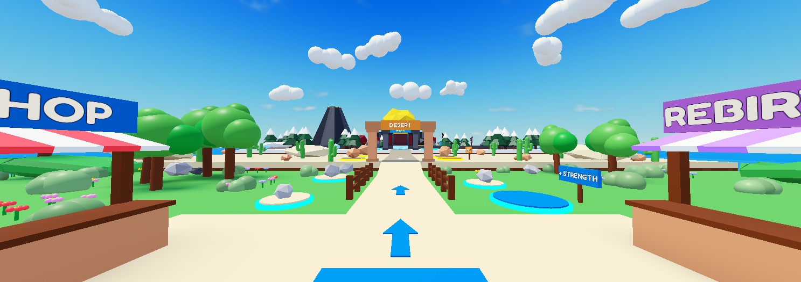
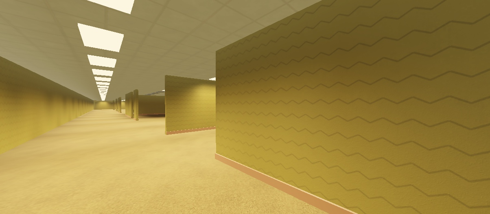
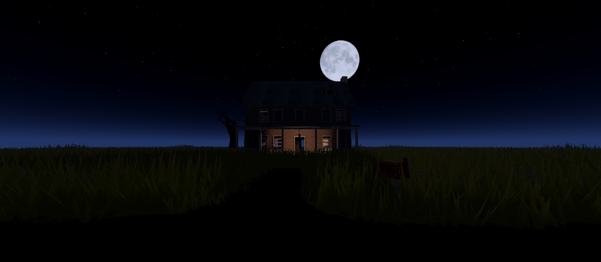
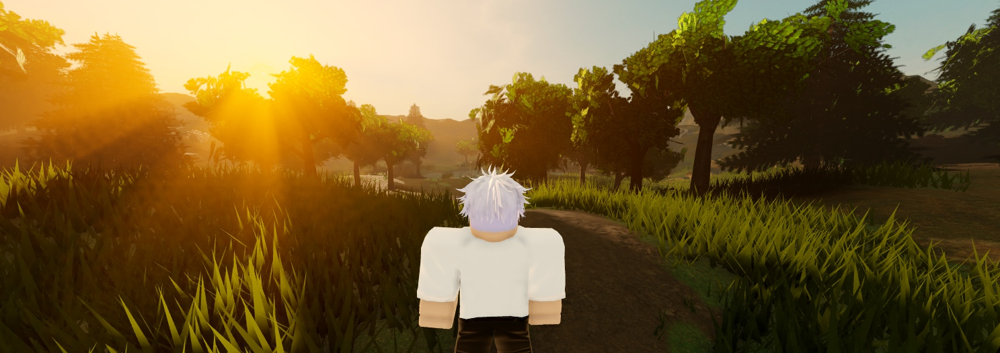

Roblox Maps by fwjelaa: the full guide
Method, kit and example maps by fwjelaa (FWJ STUDIOS). Free to use and change; please credit fwjelaa when you share maps or videos made with it.
You describe a place ("an abandoned farmhouse at night", "a forest lake at golden hour"), and Claude Code builds it in the Roblox Studio place you have open: walkable, lit, checked from every angle, and light enough to run. You never place a part. This guide explains what you need, how a build goes, how to change the result, and what to do when something looks wrong.
What you need
| Thing | Why | Where |
|---|---|---|
| Roblox Studio with the Studio MCP connected | Claude builds in your open place through it | Studio: Assistant → ... → Manage MCP Servers → Enable Studio as MCP server, then its Claude Code button |
| Claude Code | runs the /make-map skill | claude.com/claude-code |
Python 3.9 or newer, with python -m pip install pillow numpy | prepares textures and sounds | python.org |
| Blender 4.2 or newer (realistic maps only) | prepares scanned models and grows trees, in the background | blender.org |
| A Roblox Open Cloud API key (realistic maps, strongly advised) | uploads textures and models to your account | create.roblox.com → Open Cloud → API Keys |
Blocky simulator maps need only Studio, Claude Code and Python. The backrooms need textures (a key makes that automatic). The farmhouse and the forest lake need Blender and, in practice, a key: they use 38 and 15 models, and without a key each model is a file you import by hand.
The key. Give it only Assets API read and write, for your own user. Save it as one line in %USERPROFILE%\.fwjelaa\roblox-open-cloud.key (or set the ROBLOX_API_KEY environment variable). It never goes into the pack, the zip refuses anything that looks like a key, and Claude never prints it. Don't paste it into a chat you share or film; if it was ever on screen, delete it and make a new one.
Install
- Unzip
Roblox-Maps-by-fwjelaa.zipanywhere. - Open Claude Code in that folder.
- Type:
python kit/tools/run.py check. It says what is missing (Python packages, Blender, the key) and which Roblox account your uploads will go to. - Open Roblox Studio with a fresh Baseplate place and keep its window visible while Claude works.
Your first map
Type /make-map and what you want, for example:
/make-map a forest lake at golden hour with a pier and a campfire
What happens next:
- Setup. Claude starts a small local server that hands the kit to Studio, loads the kit into
ServerStorage.MapKit, and takes a test screenshot. - Plan. You get five lines: style, layout, focal point (what you see from spawn), mood and lighting, size. Say "go", or change anything. Say "just build it" up front to skip this.
- Assets (textured and realistic maps). Claude fetches free CC0 textures and models from Poly Haven and ambientCG, prepares them, and uploads them to your account. Image uploads take seconds; sounds a few minutes.
- Build. The map is built in phases (ground, route, landmarks, scatter, lighting...), one at a time.
- QA loop. Claude photographs the map from fixed spots, walks every route with Roblox's pathfinder, counts triangles and draw calls, fixes the biggest problem, and repeats: at least two rounds, usually three to five.
- Handover. You get what was built, the best shots (also saved in
maps/<id>/shots/) and the budget numbers.
Then save the place (Ctrl+S). Claude never publishes it.
The four styles
Each style has a guide in styles/ (sizes, materials, lighting, layout, what makes it look fake) and a finished example in maps/. Ask for an example by name: "build the forest lake example".
Blocky simulator (lift-a-boulder)

Bright, chunky, readable from far away: an island with a spawn plaza and zones that get harder (meadow, desert, snow, volcano), upgrade pads, ground arrows, zone gates and a giant boulder you can see from spawn. All parts, no uploads.
Backrooms (backrooms-level-0)

A seeded maze of yellow office rooms: damp carpet, wallpaper and ceiling tiles from CC0 scans, a grid of fluorescent panels, a pillar room, a dark wing and a buzzing hum.
Abandoned horror house (farmhouse-night)

A two-storey farmhouse you can walk through, built to real sizes (1 stud = 0.28 m): 35 scanned furniture and prop models, 13 scanned materials, a hole in the roof with moonlight falling through to the parlour, a dead tree grown in Blender, night wind.
Realistic nature (forest-lake)

A valley shaped by code: a lake with a pier and a campfire, a stream from the hills, maple, birch and pine trees grown in Blender with real leaf textures, scanned rocks, logs and ferns, and a real photographed sky with its low sun matched to Roblox's.
Anything else
Describe it. Claude picks the nearest style, fills a copy of the template styles/_custom.md as maps/<id>/style.md, and writes down what it changed in maps/<id>/notes.md.
How it works
- The kit (
kit/studio/MapKit/) is a tested Luau library loaded into Studio: walls with door and window openings, stairs, scatter that respects slopes and water, terrain from a height function, lighting presets, scanned-model placement, a map validator and a walk test. Claude writes each map as data (maps/<id>/map.json) plus a short build script (maps/<id>/build.luau) that calls the kit. - The tools (
kit/tools/run.py) fetch, prepare and upload assets, and record each one inassets.jsonwith its source, licence and the exact command that made it. - The skill (
/make-map, rules inCLAUDE.md) holds the workflow and every Roblox quirk measured while building the examples, so Claude doesn't rediscover them. - One map per place. Maps are built around the origin. To build another in the same place, Claude stashes the old one in
ServerStorage.MapKit_Stash(nothing is ever deleted) and hands its terrain back. - Safe by default. Terrain is only written inside a box the map has claimed; anything of yours in the way is moved to
ServerStorage.MapKit_Removed, never deleted.
Changing a map
You can just ask ("more trees by the lake", "make it darker", "move the pier"), or edit maps/<id>/map.json yourself and ask Claude to re-run the phase that uses it. Each phase rebuilds only its own layers, so a change to the trees re-runs only trees. Anything you added by hand inside Workspace.Map_<id> is lost when its layer is rebuilt; put your own things outside it.
Useful knobs in map.json:
| Knob | Example | What it does |
|---|---|---|
lighting | "golden" | the mood preset: simulator, liminal, night or golden |
seed | 21 | a different seed gives a different layout with the same rules |
trees, scatter counts | {"m": "lake_pine_a", "count": 24} | density; fewer is lighter on phones |
water | {"color": [30, 58, 52], "transparency": 0.25} | lake colour and clarity |
shots | {"name": "pier_end", "cam": [...], "look": [...]} | the spots QA photographs |
Budgets: will it run?
Roblox's own guide is about 800,000 triangles and 600 draw calls per view for 60 fps on most PCs; for phones aim for about 500,000 and 500. Claude measures every map in Play mode from each shot spot (shadows not counted).
| Map | Busiest eye-level view | Draw calls (max) | Phones |
|---|---|---|---|
| Lift a Boulder | 362k (spawn) | 229 | inside the phone target at every player-height view |
| Backrooms Level 0 | 182k (spawn) | 238 | inside |
| Farmhouse at night | 700k (spawn) | 176 | over at spawn: ~45% is Roblox's terrain grass blades |
| Forest lake | 688k (spawn) | 257 | over at spawn, pier and path: grass blades and 90 trees |
Roblox lowers grass and mesh detail on low graphics settings by itself. To make a realistic map lighter: turn terrain grass off (Terrain properties in Studio), or ask for fewer trees and props.
Troubleshooting
| You see | Why | Fix |
|---|---|---|
| Screenshots time out | Studio's window is behind others, minimized, or the display went to sleep | Bring Studio to the front and move the mouse; Claude can do both on Windows |
| Everything textured looks white right after a break | textures stream back in after the display wakes | wait a few seconds; Claude captures again before judging |
| One rock or stump stays a smooth white (or black) blob, even in Play | Roblox failed to process that model's textures, and re-uploading the same file reuses the failed copy | ask Claude to re-make it; if it stays white, swap the scan for a similar one |
| Flat gold or white sheets over the land in Edit mode only | Studio keeps old water drawn after terrain has been rebuilt a few times | press Play to check; it is not in the map |
| "the field ... is outside its claimed box" | the map's terrain needs a bigger box | Claude enlarges the box in map.json and runs the phase again |
A phase stops listing run.py material ... or run.py model ... commands | a fresh pack has the recipes but not your uploads | run the listed commands (Claude does), then the phase again |
| "refuses: the box already holds terrain the map didn't make" | your place already has terrain there | use a fresh Baseplate place, or ask Claude to move the map |
| Grass blades poking through floors | Roblox's grass grows through anything on Grass terrain | maps put mud or dirt terrain under buildings |
Credits
Method, kit and example maps by fwjelaa (FWJ STUDIOS). Textures, models, skies and leaf textures are CC0 from Poly Haven (polyhaven.com) and ambientCG (ambientcg.com); every asset is listed in CREDITS.md and assets.json. Sounds are generated by the kit. Research sources are listed in each file in research/.